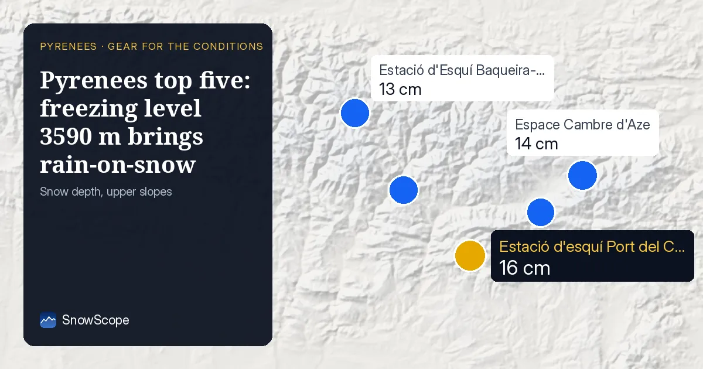
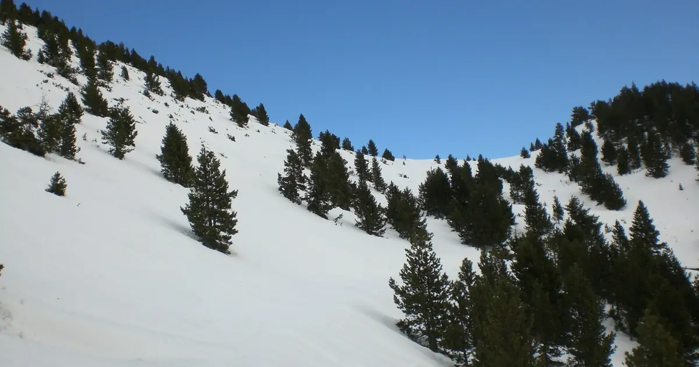
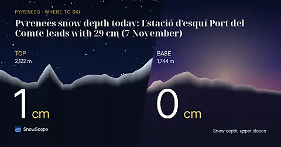

Pyrenees top five: freezing level 3590 m brings rain-on-snow
The freezing level across the Pyrenees will climb as high as 3590 metres on Monday, rising far above even the highest lift terminals. This means water will percolate into the snowpack rather than fall as snow, saturating thin layers and forming a crust within hours—pack rain gear, not winter jackets.
See the live snow forecast for Estació d'esquí Port del Comte in the SnowScope appSnow depth, powder alerts and the 3D map, free.
Rain on snow arrives when the freezing level tops the mountains
When the freezing level climbs above the peak of a mountain range, the entire snowpack is exposed to liquid water falling from above. At Estació d'esquí Port del Comte (top 2122 m), Espace Cambre d'Aze (2377 m), Estació d'Esquí Baqueira-Beret (2600 m), Estació d'esquí de Port-Ainé (2424 m), and Masella (2509 m), the air mass will be warm enough to deliver rain all the way to the base. That water does not simply run off; it penetrates the existing snowpack, saturating the crystals and triggering rapid consolidation and freeze-thaw cycling. By evening, as temperatures fall again, a crust will form—hard and variably thick, depending on wind and slope aspect.
| Resort | Snow depth | New snow, 72 h | Coming, next days | Top |
|---|---|---|---|---|
| Estació d'esquí Port del Comte | 16 cm | 0 cm | 0 cm | 2,122 m |
| Espace Cambre d'Aze | 14 cm | 0 cm | 0 cm | 2,377 m |
| Estació d'Esquí Baqueira-Beret | 13 cm | 0 cm | 1 cm | 2,600 m |
| Estació d'esquí de Port-Ainé | 13 cm | 0 cm | 0 cm | 2,424 m |
| Masella | 12 cm | 0 cm | 0 cm | 2,509 m |

Upper depths of 12–16 cm mean fast water infiltration
Upper-slope depths today span from 12 centimetres at Masella to 16 centimetres at Estació d'esquí Port del Comte. Zero new snow has fallen in the past 72 hours across all five resorts, and minimal snow is forecast—only 1 centimetre at Estació d'Esquí Baqueira-Beret by 12 November. This means the snowpack is already vulnerable to saturation. When rain washes over such thin coverage, it reaches the underlying ground or exposed rocks within minutes, saturating the entire column from top to base. The water then refreezes during the cooler nights of 10–12 November, creating a dense, uneven crust that is unforgiving underfoot.

Gear for genuinely waterproof protection
Your outerwear today must be waterproof, not merely water-resistant. A rain jacket and waterproof salopettes with taped seams are non-negotiable; Gore-Tex or equivalent materials shed rain while allowing some breathability. Thermal gaiters or high-cuff gaiters are essential to prevent water running into your boots as you traverse wet sections and puddles. Wool or synthetic socks outperform cotton, which absorbs moisture and loses insulation when saturated. A neck gaiter or balaclava protects your face and neck from wind spray off wet slopes and from the fog that often forms near the condensation level when warm, moist air meets cold mountain air.
Underfoot strategy for crust and thin snow
Wet crust demands particular care with board selection and maintenance. Fresh, temperature-appropriate wax suited to wet conditions will help your base perform predictably on crust compared to oxidised bases, which tend to catch and slow. A sharpened edge may hook unexpectedly on hard crust; for the first runs of the day, consider a slightly dulled edge until you feel how the crust is breaking and consolidating. If you venture off-piste after rain, treat stability as uncertain and shifting: water percolating through thin snow changes the balance of forces rapidly and locally. Consult the official avalanche bulletin for the Pyrenees before skiing beyond marked terrain.
Cold returns, but the crust remains
From 10 to 12 November, the region will cool steadily. The freezing level drops to 2960–3010 metres by 10 November, to 2920–3030 metres by 11 November, and to 2750–2820 metres by 12 November. Any fresh precipitation will fall as snow at higher elevations again, though amounts will remain small. However, the underlying snowpack will stay thin, and the rain-crust layer from today will persist as a stiff base. Early-season skiing on crust overlying thin snow requires discipline and technical control; meaningful powder conditions will not return until a substantial snowfall event arrives.
Tips for skiers
- Pack a fully taped rain jacket and waterproof salopettes rated to at least 10,000 mm water resistance; standard winter shell jackets will fail to keep you dry in today's downpour.
- Bring thermal gaiters or high-cuff gaiters to manage water ingress at the ankle; saturation of your boots will make your feet cold and numb rapidly in wet snow.
- Wax your bases with cold-temperature wax formulated for wet, heavy snow to maintain glide on the crust that will form overnight.
- Check the official Pyrenees avalanche bulletin before skiing off-piste; rain-on-snow events accelerate instability in thin snowpacks.
- Prioritise runs at higher elevations where air temperature is cooler and crust will be less severe; lower slopes will be heavier, slower, and more saturated.
About these numbers
Resort snow depths are the deepest snow on the resort's upper slopes on the date shown; they are estimates for an area, not a measurement at one point. Forecasts can change. Always read the official avalanche bulletin before going off-piste.
Official avalanche bulletins: Météo-France / Meteocat / AEMET
Cite this report
For research, teaching or the press: the numbers and charts are free to reuse under CC BY 4.0 with this citation.
SnowScope (2026), Pyrenees top five: freezing level 3590 m brings rain-on-snow, https://snowscope.app/blog/en/2026/11/pyrenees-what-to-bring-ski-gear-conditions-9-november-2026.html, accessed 2026-11-09
SnowScope (Atlas Labs). (2026, November 9). Pyrenees top five: freezing level 3590 m brings rain-on-snow. SnowScope snow reports. https://snowscope.app/blog/en/2026/11/pyrenees-what-to-bring-ski-gear-conditions-9-november-2026.html
BibTeX
@misc{snowscope2026pyreneeswhattobringskige,
author = {{SnowScope (Atlas Labs)}},
title = {Pyrenees top five: freezing level 3590 m brings rain-on-snow},
year = {2026},
month = nov,
howpublished = {\url{https://snowscope.app/blog/en/2026/11/pyrenees-what-to-bring-ski-gear-conditions-9-november-2026.html}},
note = {Published 2026-11-09 12:59 UTC; accessed 2026-11-09}
}· CC BY 4.0 · Methods, data and tools →
Estació d'esquí Port del Comte: snow and temperature by height, this winter vs last (tools) →
Follow Estació d'esquí Port del Comte
Free: a message when fresh snow is coming, and the forecast every morning.
More snow reports

Masella, Port-Ainé and Cauterets have the most skiable snow in the Pyrenees on 3 November. Upper slopes hold 15–17 cm.

Estació d'esquí Port del Comte (Spain) has the deepest snow in the Pyrenees today, with about 29 cm on its upper slopes. Aramón Cerler follows with …

We combined today's snow depth, the new snow of the last 72 hours and the forecast to pick Masella, Cauterets Cirque du Lys and Aramón Cerler. Of …